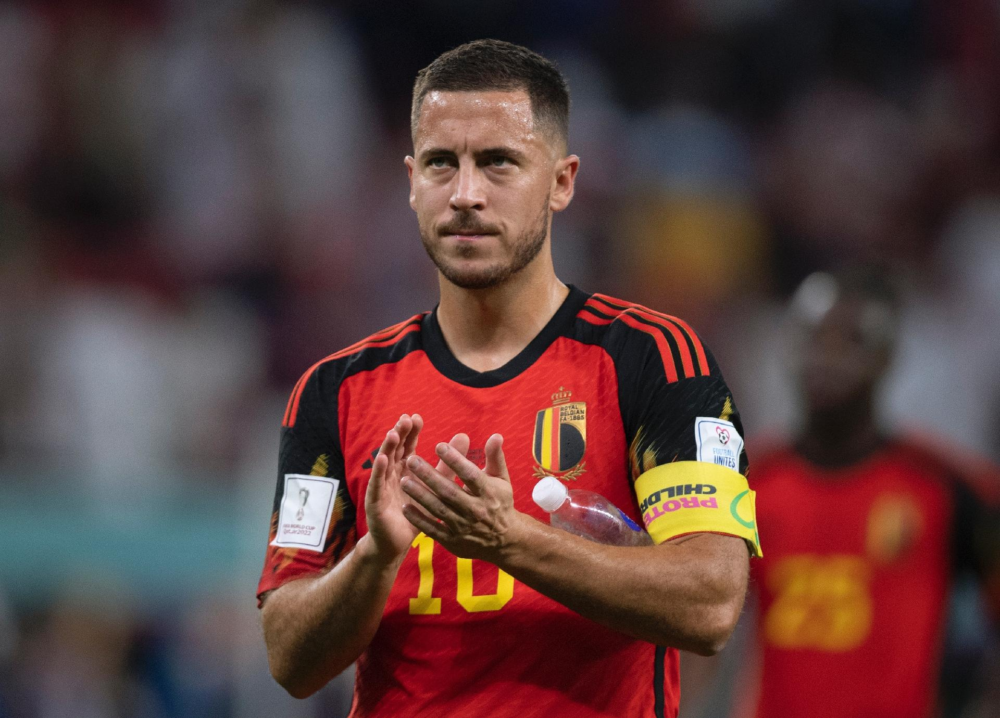

Em uma reviravolta surpreendente no mundo do futebol, o astro belga Eden Hazard anunciou sua aposentadoria aos 31 anos de idade. A notícia chocou os fãs, já que Hazard estava em plena forma e era considerado um dos melhores jogadores do mundo. Hazard, que era conhecido por sua incrível habilidade no drible e sua capacidade de mudar o rumo de uma partida com um único lance, passou a maior parte de sua carreira no Real Madrid, onde conquistou inúmeros títulos da Liga dos Campeões e se tornou uma lenda do clube. O motivo por trás de sua aposentadoria precoce, no entanto, foi um tanto inusitado. Segundo fontes próximas ao jogador, Hazard decidiu abandonar o futebol para se dedicar à sua paixão pela culinária. Ele revelou que sempre sonhou em se tornar um renomado chef e decidiu seguir seu coração. Embora os fãs fiquem tristes com o fim da carreira de Hazard nos gramados, eles agora aguardam ansiosamente para experimentar sua habilidade culinária. Hazard já está planejando abrir um restaurante de alta classe em Bruxelas, onde promete surpreender o mundo com seus pratos gourmet. É uma história inusitada, mas Eden Hazard demonstrou que está disposto a seguir seus sonhos, não importa o quão improváveis possam parecer. Sua aposentadoria deixa um vazio no mundo do futebol, mas abre as portas para uma nova e emocionante aventura culinária.
